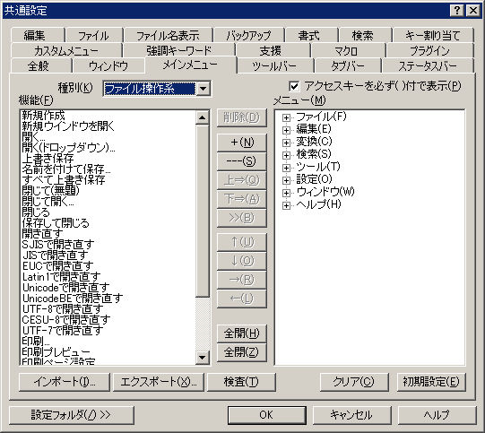

共通設定 『メインメニュー』プロパティ
『全般』
『ウィンドウ』
『メインメニュー』
『ツールバー』
『タブバー』
『ステータスバー』
『編集』
『ファイル』
『ファイル名表示』
『バックアップ』
『書式』
『検索』
『キー割り当て』
『メインメニュー』
『強調キーワード』
『支援』
『マクロ』
『プラグイン』

ここでは、メインメニューの変更ができます。
メニューの編集方法は以下です。
①右部の[メニュー]枠から、変更追加削除したい位置を選択する。
②左上部の[種別]を選択し、「機能」枠内から機能を選択する。
③[削除]ボタンを押せば、メニューから選択した機能を削除します。
④[＋]ボタンを押せば、選択されている子メニューの下、または機能の後ろに子メニューを追加します。
⑤[---]ボタンを押せば、セパレータをメニューで反転表示されている行の前に挿入します。（トップレベルの場合、先頭に挿入します。）
⑥[上⇒]ボタンを押せば、選択されている機能をメニューで反転表示されている行の前に挿入します
⑦[下⇒]ボタンを押せば、選択されている機能をメニューで反転表示されている行の後ろに挿入します
⑧[>>]ボタンを押せば、選択されている機能をメニューの最後に追加します。
⑨[↑]ボタンを押せば、メニューで選択した機能の順序を上へ移動します。
⑩[↓]ボタンを押せば、メニューで選択した機能の順序を下へ移動します。
⑪[→]ボタンを押せば、メニューで選択した機能を一階層下へ移動します。
⑫[←]ボタンを押せば、メニューで選択した機能の一階層上へ移動します。
⑬[全開]ボタンを押せば、メニュー枠の項目をすべて展開します。
⑭[全閉]ボタンを押せば、メニュー枠の項目をすべてたたみます。
子メニューの名前
子メニューの名前は、メニューを選択し、シングルクリックすることで自由に設定することができます。
アクセスキー
メニューのアクセスキーは、メニュー枠の項目をダブルクリックすることで設定できます。
□アクセスキーを必ず( )付で表示
メニューのアクセスキーの表示方法を指定します。
オンのときは必ず項目名の後ろに( )付きで表示します。
オフのときは、項目名の中にアクセスキーで指定した文字があればその文字の下に下線を引きます。指定した文字が見つからない場合は後ろに( )付きで表示します。
[インポート] ボタン
メインメニュー設定ファイルを読み込みます。
現在のメインメニュー設定は、読み込んだメインメニュー設定ファイルの内容に置き換わります。
共通設定ダイアログをキャンセルすれば、変更されません。
[エクスポート] ボタン
設定中のメインメニュー設定の内容を、メインメニュー設定ファイルとして書き出します。
[検査] ボタン
メインメニュー設定の整合性を検査します。
[クリア] ボタン
メニュー枠の内容をすべて削除します。
[初期設定] ボタン
設定中のメインメニュー設定の内容を、初期状態に戻します。
[設定フォルダー]
設定フォルダーボタンは、ユーザー別設定を行っている場合のみ表示されます。